All 9 NeetCode 150 array and hashing problems, one picture each
Open a problem to see its picture: the question, the key idea, the full code, and a step by step walkthrough.
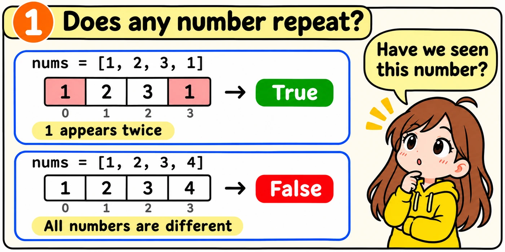
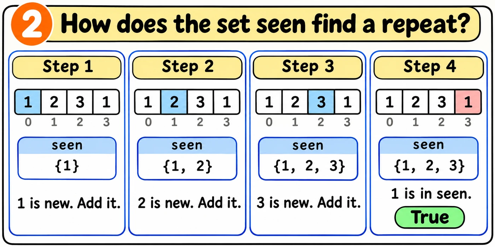
A set is fast to check, so one pass is enough.
Tap Build it to see how I would write and explain this in an interview.
The one idea to remember
Write the whole function from memory. The comments explain each job, and a failed test gives a hint, not the answer.
We wrote the start and last line. Fill the gap inside the loop. Start at the left edge.
def containsDuplicate(nums): seen = set() for num in nums:
return False
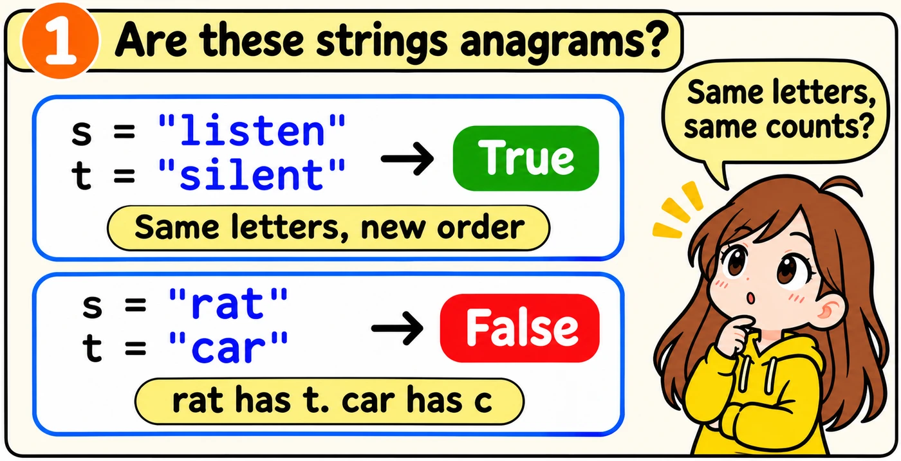
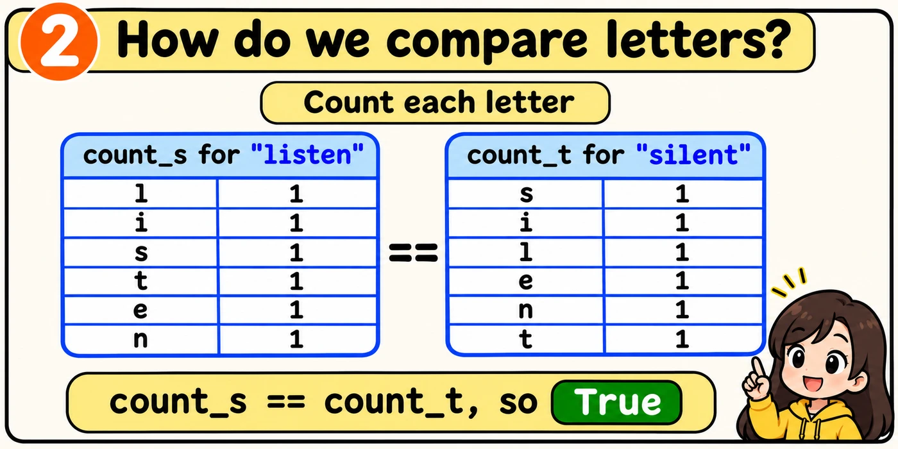
Tap Build it to see how I would write and explain this in an interview.
The one idea to remember
Write the whole function from memory. The comments explain each job, and a failed test gives a hint, not the answer.
We wrote most of the code. Fill the count for s and the last line. Start each at the left edge.
def isAnagram(s, t): count_s = {} count_t = {} for letter in s:
for letter in t: if letter not in count_t: count_t[letter] = 0 count_t[letter] += 1
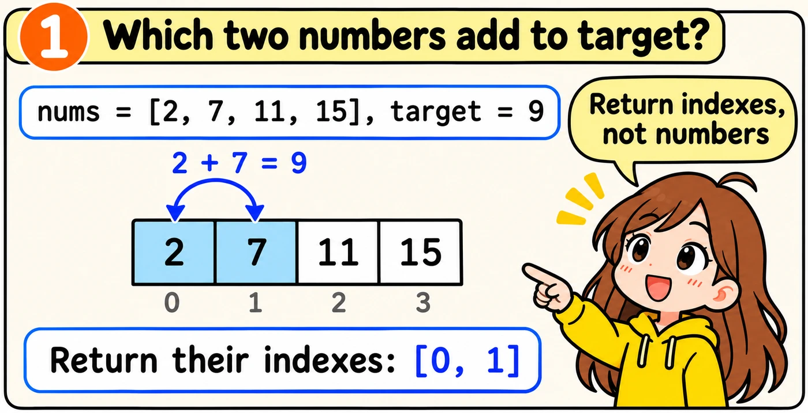
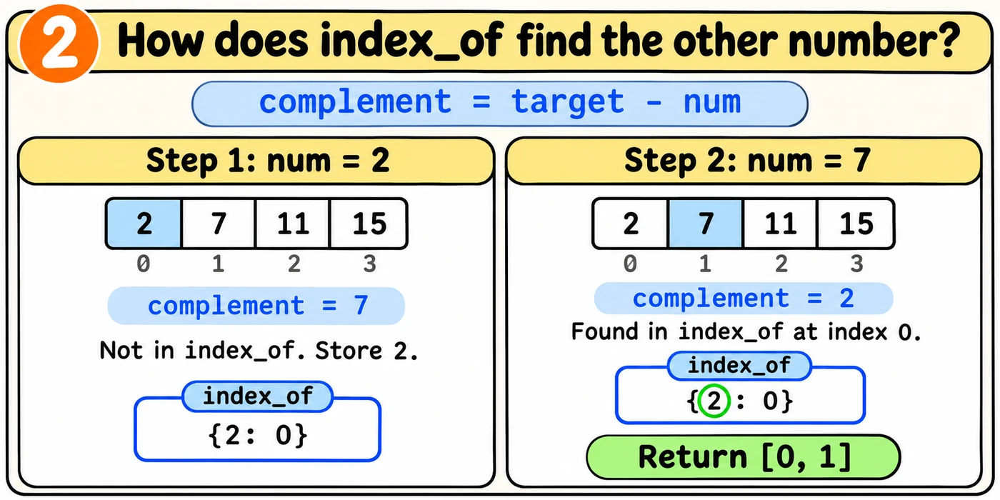
The dictionary index_of stores the index of each number we have seen.
For nums = [3, 2, 4] and target = 6, why do we check for the complement before storing num?
Tap Build it to see how I would write and explain this in an interview.
The one idea to remember
Write the whole function from memory. The comments explain each job, and a failed test gives a hint, not the answer.
We wrote the start of the loop. Fill the gap. Start at the left edge.
def twoSum(nums, target): index_of = {} for index in range(len( num = nums[index] complement = target - numnums)):
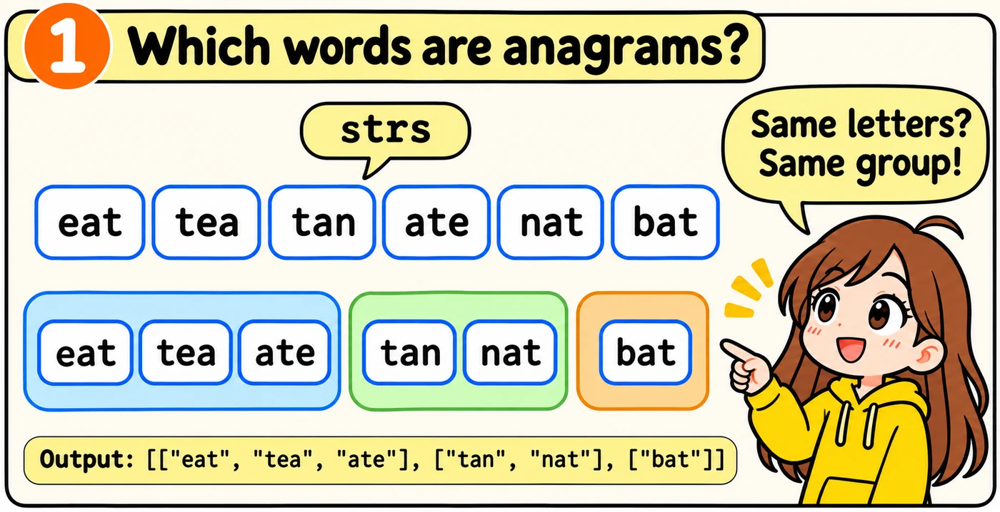
The groups may be in any order.
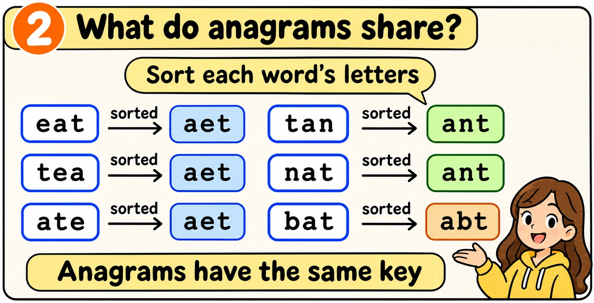
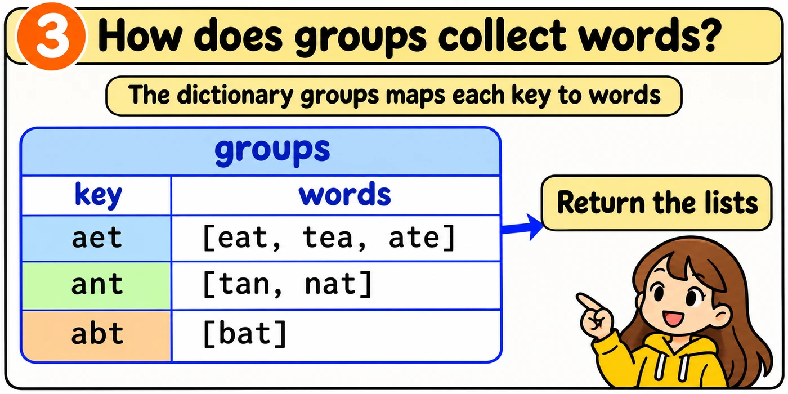
Tap Build it to see how I would write and explain this in an interview.
The one idea to remember
Write the whole function from memory. The comments explain each job, and a failed test gives a hint, not the answer.
We wrote the start and last line. Fill the two gaps inside the loop. Start each at the left edge.
def groupAnagrams(strs): groups = {} for word in strs:
return list(groups.values())
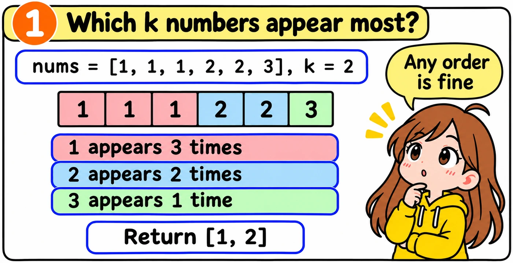
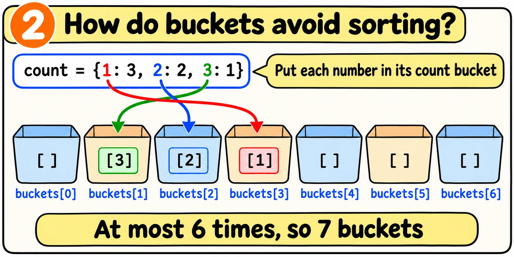
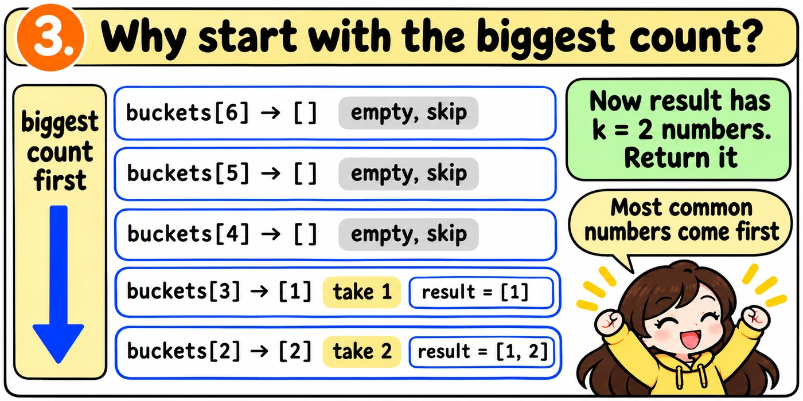
Tap Build it to see how I would write and explain this in an interview.
The one idea to remember
Write the whole function from memory. The comments explain each job, and a failed test gives a hint, not the answer.
We wrote the counting and empty buckets. Fill the two gaps. Start each at the left edge.
def topKFrequent(nums, k): count = {} for num in nums: if num not in count: count[num] = 0 count[num] += 1 # one bucket for each count most = len(nums) buckets = [] for times in range(most + 1): buckets.append([])
# walk from the biggest count result = [] for times in range(most, 0, -1):
return result
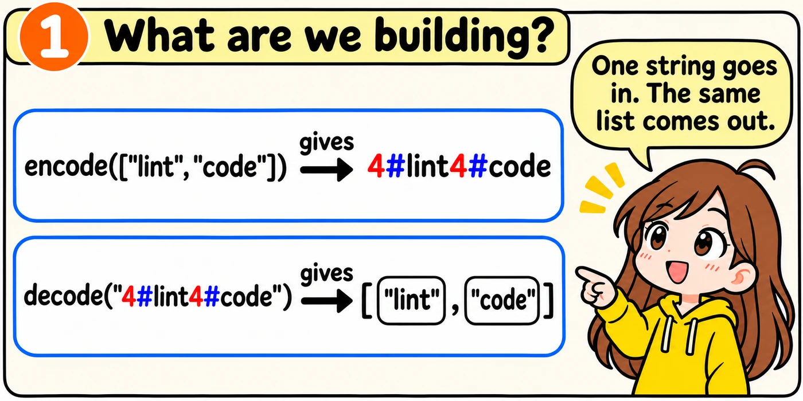
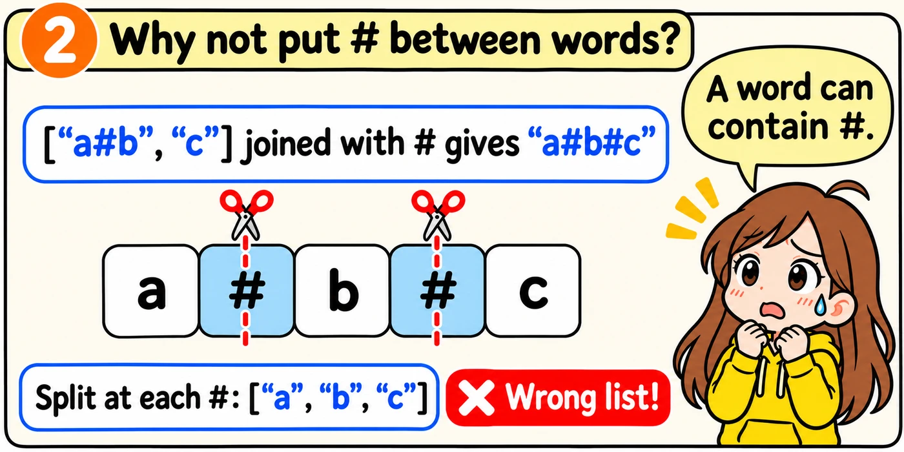
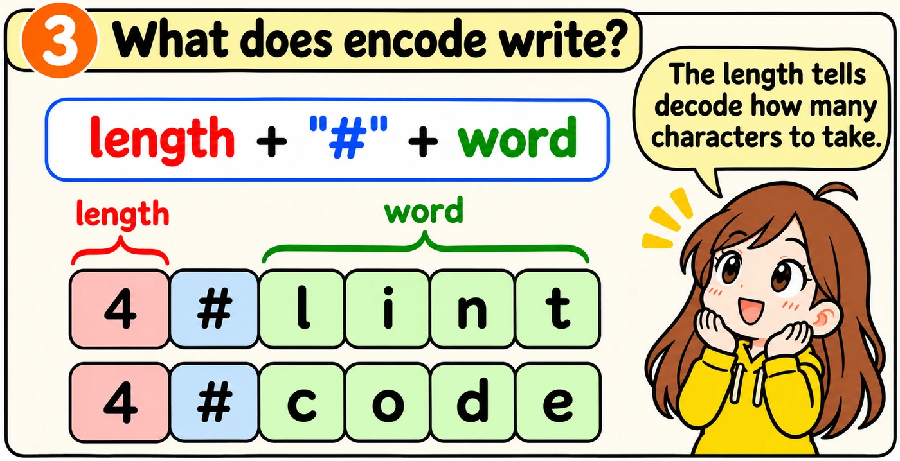
The '#' marks where the length ends.
Let's run decode on ["a#b", "c"]. It is encoded as "3#a#b1#c". Press Next to see each step.
def decode(s): words = [] i = 0 while i < len(s): # read the length up to '#' j = i while s[j] != "#": j += 1 size = int(s[i:j]) start = j + 1 end = start + size words.append(s[start:end]) i = end return words
The variable i points to the 3 in "3#a#b1#c". Why does decode not stop at the '#' inside a#b?
Tap Build it to see how I would write and explain this in an interview.
The one idea to remember
Write both functions from memory. The comments describe each job. A failed test gives a hint, not the answer.
The start of each function is already written. Fill in the three gaps. Start each gap at the left edge.
def encode(strs): parts = [] for word in strs:
return "".join(parts) def decode(s): words = [] i = 0 while i < len(s): # read the length up to '#'
return words
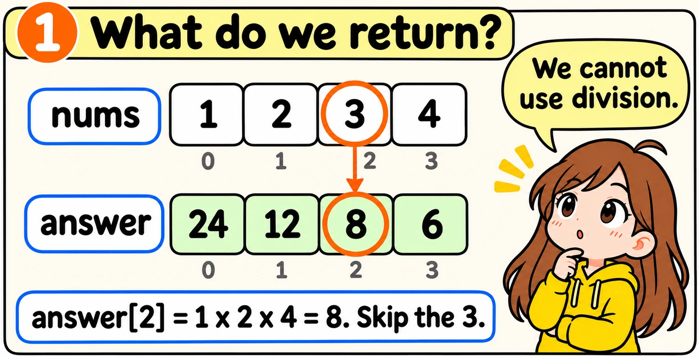
The time must be O(n).
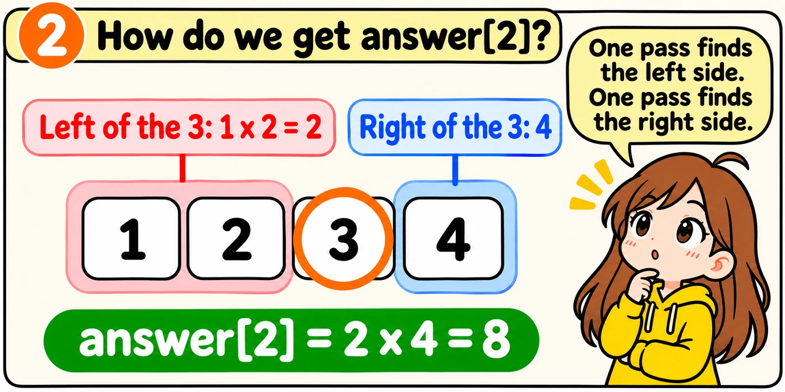
A left pass stores the left product in answer. A right pass multiplies in the right product.
Let's run the code on [1, 2, 3, 4]. The blue cells in nums show the numbers already used in the product.
def productExceptSelf(nums): n = len(nums) answer = [1] * n # left pass: product before i prefix_product = 1 for i in range(n): answer[i] = prefix_product prefix_product *= nums[i] # right pass: product after i suffix_product = 1 for i in range(n - 1, -1, -1): answer[i] *= suffix_product suffix_product *= nums[i] return answer
In the left pass, why do we set answer[i] before multiplying prefix_product by nums[i]?
Tap Build it to see how I would write and explain this in an interview.
The one idea to remember
Write the whole function from memory. The comments describe each job. A failed test gives a hint, not the answer.
The start and final line are already written. Fill in the two gaps. Start each gap at the left edge.
def productExceptSelf(nums): n = len(nums) answer = [1] * n # left pass: product before i prefix_product = 1 for i in range(n):
# right pass: product after i
return answer
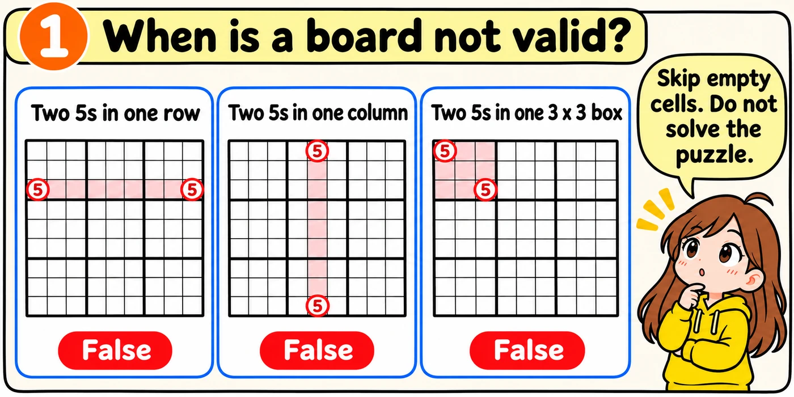
Empty cells hold '.', so we skip them.
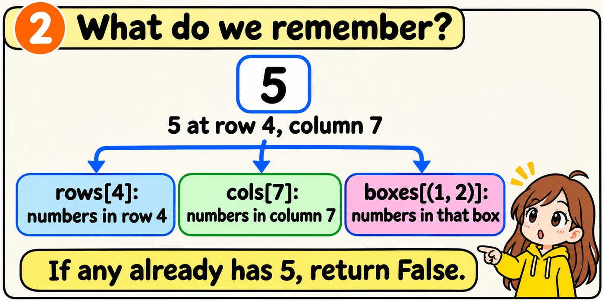
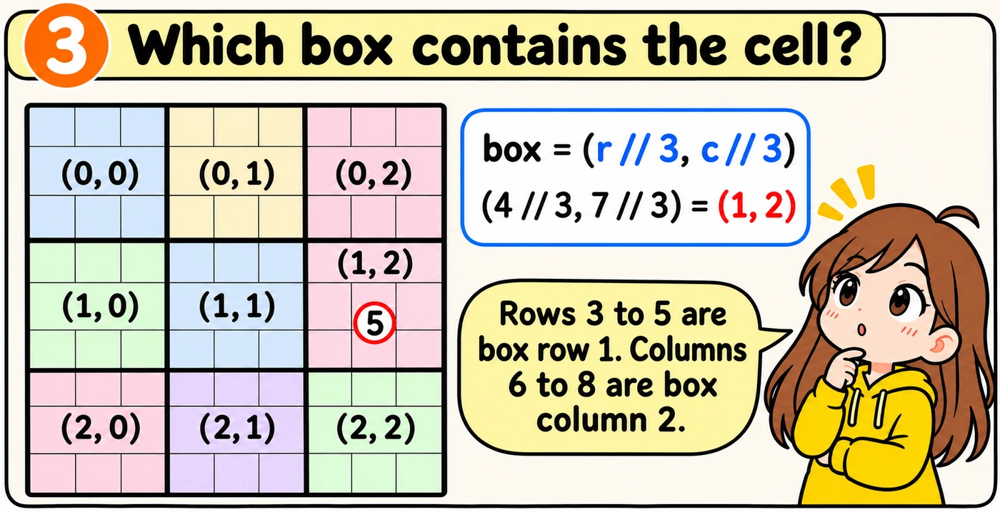
Two 4s are in the same 3 x 3 box. They are in different rows and columns. Which set finds the repeat?
Tap Build it to see how I would write and explain this in an interview.
The one idea to remember
Write the whole function from memory. The comments describe each job. A failed test gives a hint, not the answer.
The sets and loops are already written. Fill in the two gaps. Start each gap at the left edge.
from collections import defaultdictdef isValidSudoku(board): rows = defaultdict(set) cols = defaultdict(set) boxes = defaultdict(set) for r in range(9): for c in range(9): val = board[r][c] if val == ".": continue
return True
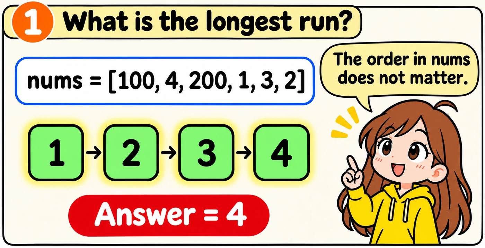
The time must be O(n), so we cannot sort.
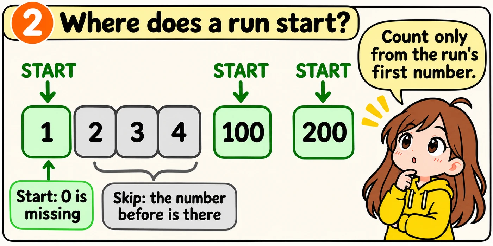
We put every number in the set num_set, so each check is fast.
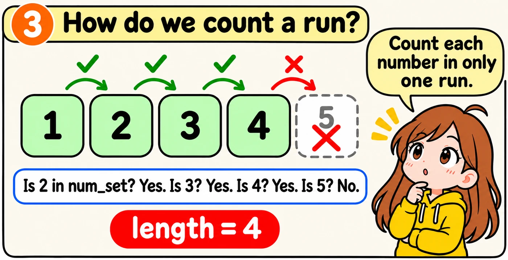
The variable num is 3. The number 2 is in num_set. What happens?
Why do we count only from the start of a run?
Tap Build it to see how I would write and explain this in an interview.
The one idea to remember
Write the whole function from memory. The comments describe each job. A failed test gives a hint, not the answer.
The set and loop are already written. Fill in the two gaps. Start each gap at the left edge.
def longestConsecutive(nums): num_set = set(nums) longest = 0 for num in num_set: # skip num if not a start
return longest